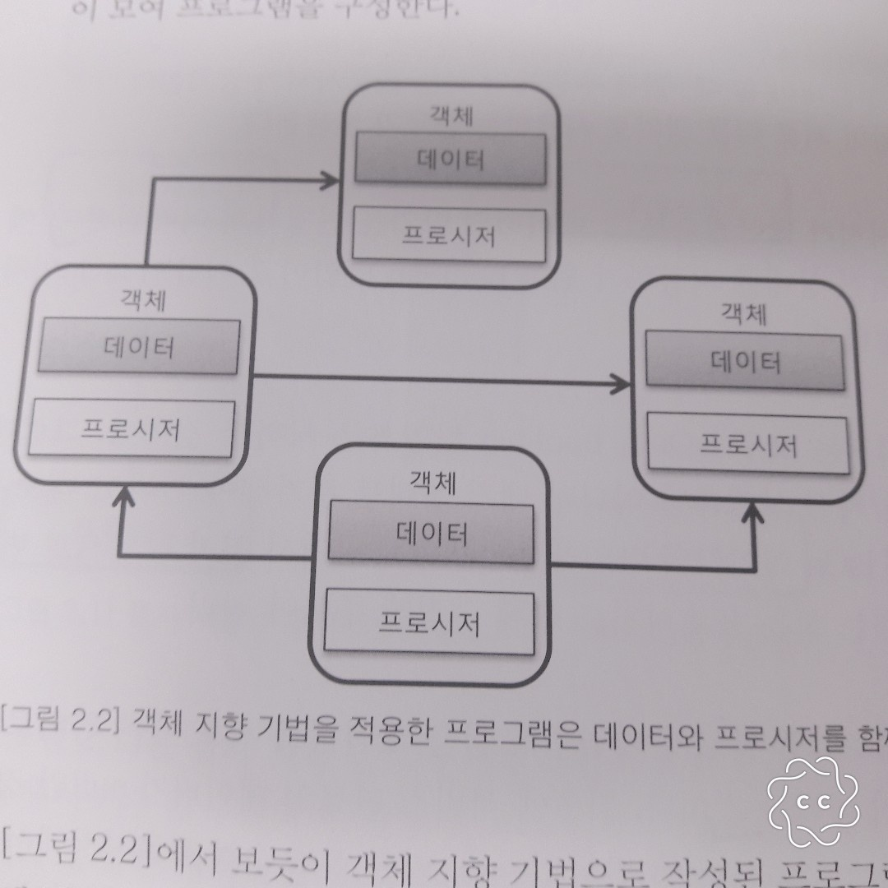
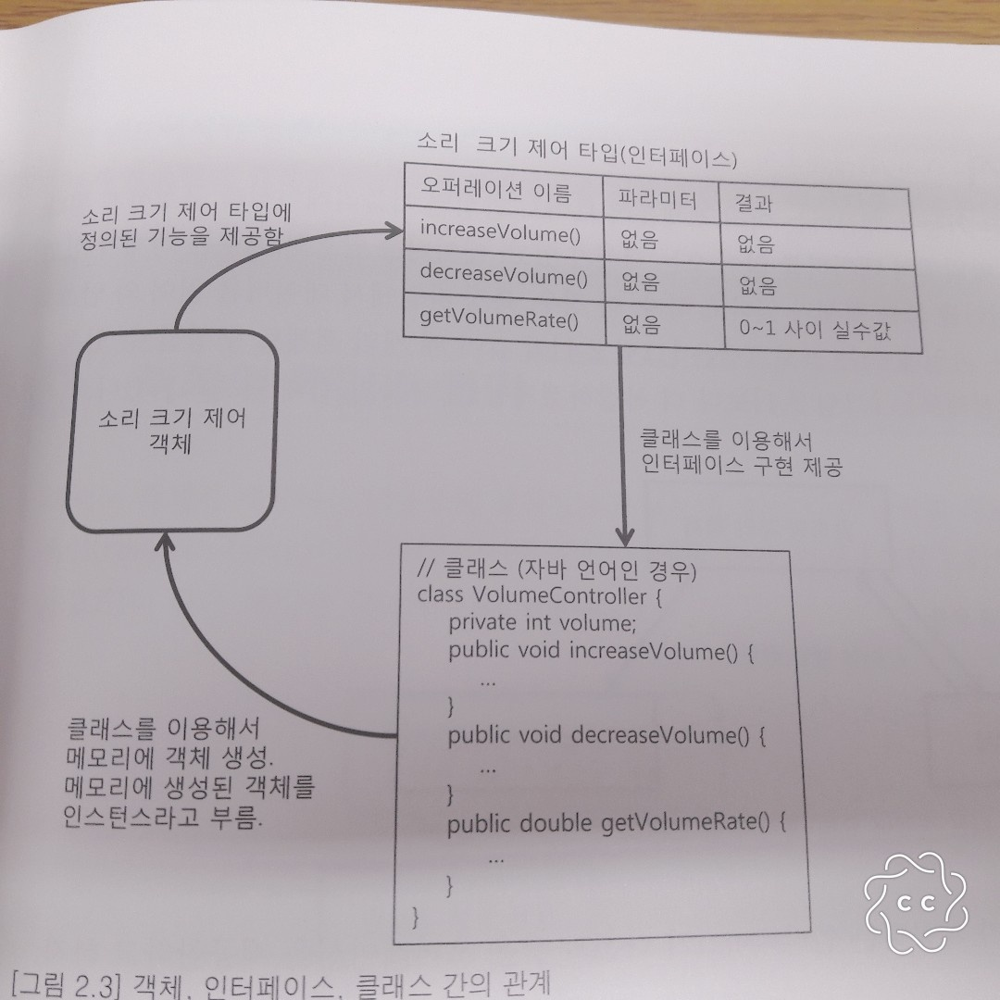
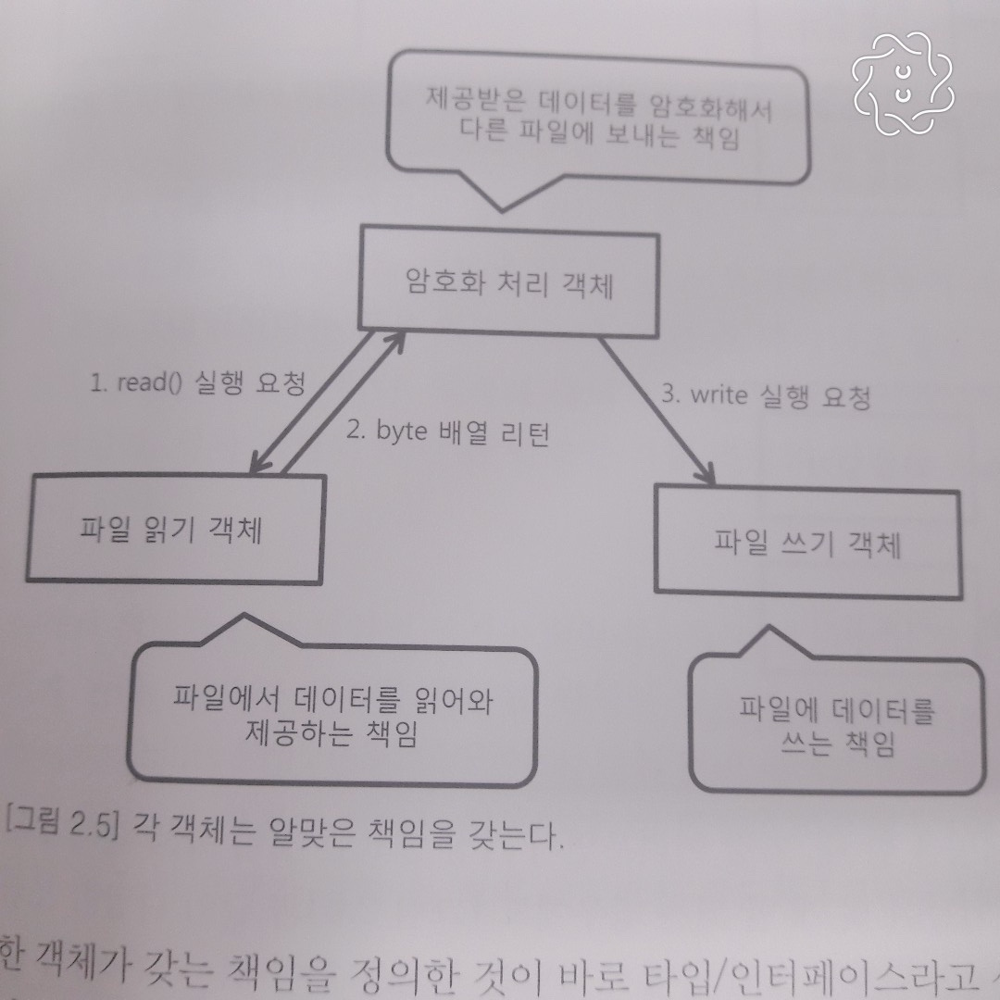
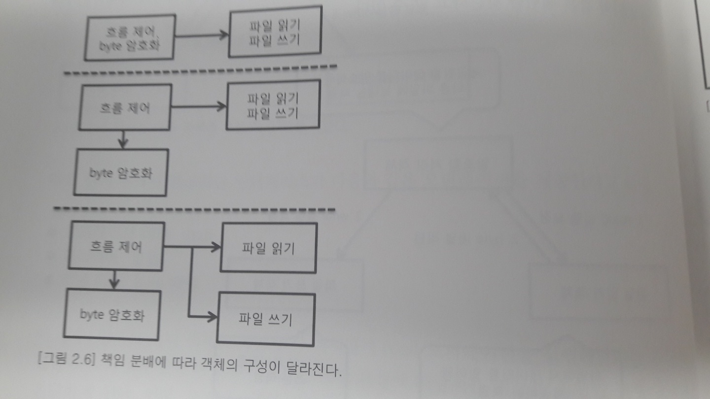
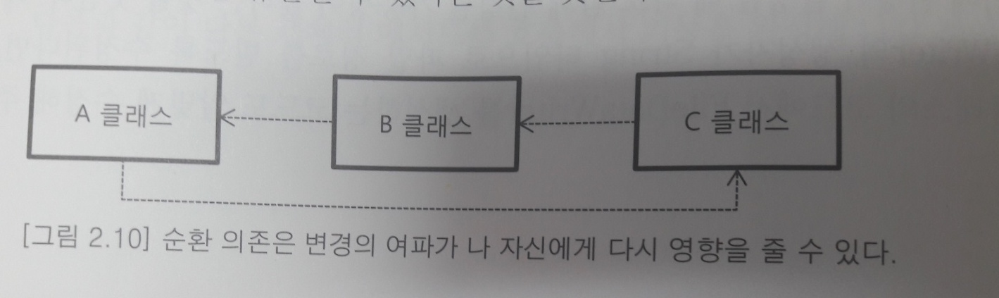
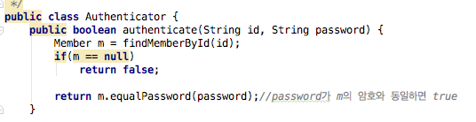
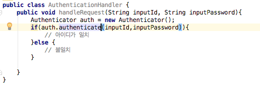
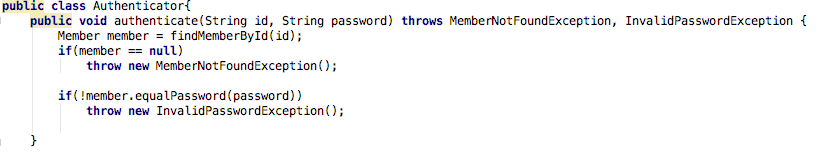
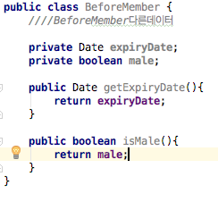
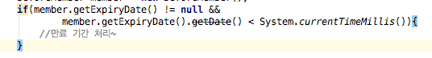

챕터 01 객체지향파트에는 총 6가지 파트가 있다
1은 절차지향과 객체지향
2은 객체
3은 객체의 책임과 크기
4은 의존
5은 캡슐화
6은 객체 지향 설계 과정
객체 지향을 잘 하려면 이와 대조되는 기법인 절차 지향적으로 프로그램 작성하면 안됨!!
객체지향을 지원하는 언어를 사용해도 실제 결과물은 객체 지향과 거리가 멀수 있다
이장을 보면서 객체에 대한 이해를 더욱 키울수 있었다.
절차지향과 객체지향
절차 지향?
소프트웨어를 구현한다는 것은 결국 최종적으로 소프트웨어를 구성하는 데이터와 데이터를 조작하는 코드를 작성하는 것이다
데이터를 조작하는 코드를 별도로 분리해서 함수나 프로시저와 같은 형태로 만들고 각 프로시저들이 데이터를 조작하는 방식으로 코드를 작성할수 있다
이렇게 프로시저로 프로그램을 구성하는 기법을 절차 지향 프로그래밍이라고 부른다.
노트
절차 지향이라고 해도 뭔가 순서에 따라 프로그래밍하는 방식을 생각할 수 있으나 사실 여기서의 절차는 영어 단어를 우리말로 옮긴 것 뿐!!
실질적으로 프로시저 지향이라고 부르는 것이 더욱 의미 있음!
위에 그림은 절차 지향 방식의 전형적인 구조를 보여주고 있다. 각 프로시저는 데이터를 사용해서 기능을 구현하며 필요에 따라 다른 프로시저를 사요하기도 한다. 또한, 여러 프로시저가 동일한 데이터를 공유한다.
절차 지향 프로그래밍으로 시험 성적 관리 프로그램을 만든다면 아마 다음과 같이 생각할 것이다
1.평균 계산 프로시저는 각 과목의 점수가 보관된 데이터를 읽어서 합을 구한 뒤, 편균 값을 계산한다. 계산된 편균값은 다른 데이터로 생성된다
2.화면 출력 프로시저는 평균 계산 프로시저가 생성한 편균 값 데이터와 과목 점수 데이터를 이용해서 화면에 성적을 출력한다.
여기서 평균 계산 프로시저와 화면풀력 프로시저는 데이터를 공유해서 사용!! 다수의 프로시저들이 데이터를 공유하는 방식으로 만들어지기 때문에 절차지향은 자연스럽게 데이터를 중심으로 구현된다!!
데이터와 그 데이터를 사용하는 프로시저를 작성하는 것은 자연스러운 과정이기 때문에 최초의 절차 지향적 코드는 구현이 쉽다 하지만 프로그램이 규모가 커져서 데이터의 종류가 증가하고
이를 사용하는 프로시저가 증가되면 다음과 같은 문제 발생
1.데이터 타입이나 의미를 변경해햐 할 때 함깨 수정해야 하는 프로시저가 증가
2.같은 데이터를 프로시저들이 서로 다른 의미로 사용하는 경유가 발생
한 데이터를 사용하는 프로시저가 많아질수록 그 데이터의 타입을 변경하기 어려워진다 또한 이것보다 더 안좋은 경우는
프로그램의 규모가 커질수록 같은 데이터를 서로 다른 의미로 사용하는 경우가 발생할 가능성이 높다는 것
이 문제들은 절차 지향적으로 프로그램을 구성할 때 매우 흔하게 발생하는 문제들 이로 인해 새로운 요구 사항이 생겨서 프로그램의 한 곳을 수정하게 되면
다른 곳에서 문제가 발생하고 다시 그 곳을 수정하면 또 다른 곳에서 문제가 발생하는 악순환이 발생할 확률이 높다!!
객체 지향?
절차 지향과 달리 객체 지향은 데이터 및 데이터와 관련된 프로시저를 객체라고 불리는 단위로 묶는다. 객체는 프로시저를 실행하는데 필요한 만큼의 데이터를 가지며, 객체들이 모여 프로그램을 구성한다.
위에 그림에서 보듯 객체 지향ㅇ 기법으로 작성된 프로그램은 객체들로 구성된다. 각 객체는 자신만의 데이터와 프로시저를 갖는다.
객체는 자신만의 기능을 제공하며 각 객체들은 서로 연결되어 다른 객체가 제공하는 기능을 사용할수 있게 된다.
모든 프로시저가 데디이터를 공유하는 절차 지향과 달리 객체 지향은 객체 별로 데이터와 프로시저를 알맞게 정의해야 하고 프로그램의 규모가 작을 때에는 절차 지향
방식보다 복잡한 구조를 갖게된다. 하지만 객체 지향적으로 만든 코드에서는 객체의 데이터를 변경하더라도 해당 객체로만 변화가 집중되고 다른 계체에는 영향을 주지 않기 때문에
절차 지향 방식보다는 프로그램을 더 쉽게 변경하 수 있는 장점을 갖는다.
객 체
객체의 핵심은 기능을 제공하는 것
객체지향의 가장 기본은 객체이다. 객체는 데이터와 그 데이터를 조작하는 프로시저로 구성된다고 했는데 이는 객체의 물리적인 특징일 뿐이다.
실제로 객체를 정의할 때 사용되는 것은 객체가 제공해야 할 기능이며, 객체가 내부적으로 어떤 데이터를 갖고 있는 지로는 정의되지 않는다.
예를 들어, 소리 크기 제어 객체가 있다고 하면 이 객체는 소리 크기를 제어하는 기능을 제공하며 아마도 이 객체가 제공하는 기능은 다음과 같을 것이다
1. 소리크기 증가
2. 소리크기 감소
3. 음 소거
객체가 무슨 데이터 값을 보관한건 중요하지 않고 어떻게 소리를 감소, 증가시키는지는 알수 없다 단지 세 개의 기능을 제공한다는 것이 중요할 뿐이다!
인터페이스와 클레스
객체는 객체가 제공하는 기능으로 정의된다고 했다 보통 객체가 제공하는 기능을 오퍼레이션이라고 부른다. 즉 객체는 오퍼레이션으로 정의가 됨
객체가 제공하는 기능을 사용한다는 것은 결국 객체의 오퍼레이션을 사용한다는 의미가 됨. 그런데 객체가 제공하는 오퍼레이션을 사용할 수 있으려면 그 오퍼레이션의
사용법을 알아야 한다.
오퍼레이션의 사용법은 일반적으로 다음과 같이 세 개로 구성되며, 이 세 가지를 합쳐서 시그너처라고 부른다.
1. 기능 식별 이름
2. 파라미터 및 파라미터 타입
3. 기능 실행 결과 값
객체가 제공하는 모는 오퍼레이션 집합을 객체의 인터페이스라고 부르며 서로 다른 인터페이서를 구분할 때 사용되는 명칭이 바로 타입이다.
여기서 말하는 인터페이스는 자바나 c#에서 포함되어 있는 인터페이스가 아니라 객체지향에서 오퍼레이션 집합을 표현할 떄 사용되는 용어
인터페이스는 객체를 사용하기 위한 일종의 명세나 규칙이라고 생각하면 됨
인터페이스는 객체가 제공하는 기능에 대한 명세일뿐 실체 객체가 기능을 어떻게 구현하는지에 대해서는 포함하고 있지 않다. 실제 객체를 구현, 정의하는 것은
클래스 이다.
인터페이스, 오퍼레이션, 클래스, 객체의 관계 정리 그림
메시지
객체 지향은 기능을제공하는 여러 객체들이 모여서 완성된 어플리케이션을 구성하게 된다. 여기서 예를 들어 암호처리 객체와 파일 읽기 객체가있다고 하자 암호처리 객체가 파일읽기 객체에게 파일을 읽어 달라는 요청을 전달하게 된다 이때 오퍼레이션의 실행을 요청하는 것을 메시지를 보낸다고 표현한다.
객체의 책임과 크기
객체는 객체가 제공하는 기능으로 정의된다고 했는데 이것을 다시 말하면 객체마다 자신만의 책임이 있다는 의미
책임 예 그림
한 객체가 갖는 책임을 정의한 것이 바로 타입/인터페이스라고 생각하면 된다.
그럼 객체가 갖는 책임은 어떻게 결정할까 이 결정을 하는 것이 바로 객체 지향 설계의 출발점!!!(내생각에 매우 중요!!)
처음에 프로그램을 만들기 위해 필요한 기능 목록을 정리해야 한다.
다음은 목록을 정리한 예 이다
1.파일의 byte 데이터를 제공한다.
2.파일에 byte 데이터를 쓴다.
3.byte 데이터를 암호화해서 새로운 byte 데이터를 생성한다.
4.전체 흐름을 제어한다.
이기능을 어떻게 객체들에게 분배하느냐에 따라서 객체의 구성이 달라진다.
책임에 따른 기능들 객체에게 분배
객체 지향적으로 프로그래밍을 할 때, 가장 어려우면서 가장 중요한 것이 바로 객체마다 기능을 할당하는 과정
기능이 몇개 되지 않으나 다양한 조합으로 구성 가능 이런 다양한 조합 중에서 알맞은 구성을 찾기 쉽지 않다.
상황에 따라 객체가 가져야 할 기능의 종류와 개수는 달라지나 모든 상황에 들어맞는 객체-책임 구성 규칙이 존재하지 않는다.
하지만 객체가 얼마나 많은 기능을 제공 할 것인가에 대한 확실한 규칙이 하나 존재하는데 바로 객체가 갖는 책임의 크기는
작을수록 좋다는 것이다. 만약 한 객체에 많은 기능을 넣으면 절차지향 방식과 비슷해진다.
객체의 크기와 관련된 원칙이 있는데 단일 책임 원칙이다. 객체는 단 한개의 책임만을 가져야 한다는 원칙이다.
의 존
객체 지향적 프로그램을 구현하다 보면 다른 객체가 제공하는 기능을 이용해서 자신의 기능을 완성하는 객체가 출현하게 된다.
한 객체가 다른 객체를 이용한다는 것은 실제 구현에서는 한 객체의 코드에서 다른 객체를 생성하거나 다른 객체의 메서드를 호출한다는 것을 의미
한 객체에서 다른 객체를 생성하거나 다른 객체의 메서드를 호출할 떄 이를 그 객체에 의존 한다고 표현
객체에서 다른 타입에 의존을 한다는 것은 의존하는 타입에 변경이 발생할 떄 나도 함깨 변경될 가능성이 높다는 것을 뜻함.
의존의 영향은 꼬리에 꼬리를 문 것처럼 전파되는 특징을 갖는다.
의존 관계도

의존의 이런 특징 때문에 의존이 순환해서 발생할 경우 다른 방법이 없는지 고민해야 한다. 특히 순환의존같은 경우 적극적으로 이를 해소하는 방법을 찾아야 한다.
순환의존 관계도
의존의 양면성
다음 코드를 한번 봐보자
Authenticator 클래스를 사용하는 코드는 authenicate 메서드를 이용해사용자가 입력한 암호가 올바른지 여부 판단
이 그림은 AuthenticationHandler클래스는 Authenticator클래스에 의존하고 있고
Authenticator클래스가 변화가 생기면 AuthenticationHandler클래스도 영향을 받는다
만약 여기서 로그인이 왜 안되는지 로그로 남겨달라는 요구가 추가되면 다음과 같이 변경 될것이다.
위와 같이 변경될려면 Authenticator클래스가 이렇게 변경 되어야 한다
위의 그림은 의존이 다음과 같이 상호관에 영향을 준다는 것을 보여줌
캡슐화
객체 지향의 장점은 한 곳의 구현 변경이 다른 곳에 변경을 가하지 않도록 해준다는데 있다.
객체 지향은 기본적으로 캡슐화를 통해서 한 곳의 변화가 다른 곳에 미치는 여향을 최소화한다.
캡슐화는 객체가 내부적으로 기능을 어떻게 구현하는지를 감추는 것이다.
이를 통해 내부의 기능 구현이 변경되더라도 그 기능을 사용하는 코드는 영향을 받지 않도록 만들어 준다.
즉 내부 구현 변경의 유연함을 주는 기법이 바로 캡슐화
절차 지향 방식과 캡슐화 방식으로 구현 후 비교
절차 지향 방식 코드
회원의 서비스 만료 날짜 여부에 따라 서비스를 제공하거나 안내 페이지를 보여줘야 한다고 하자 서비스 만료 날짜 여부를 확인하는 코드는 여러 곳에서 사용될것 회원 정보를 담고 있는 클래스는 만료 날짜 데이터를 담고 있을 것이다
BeforeMember 객체를 이용해서 만료 여부를 확인하는 코드는 BeforeMember가 제공하는 expiryDate데이터의 값과 현재 시간을 비교하게 된다.
